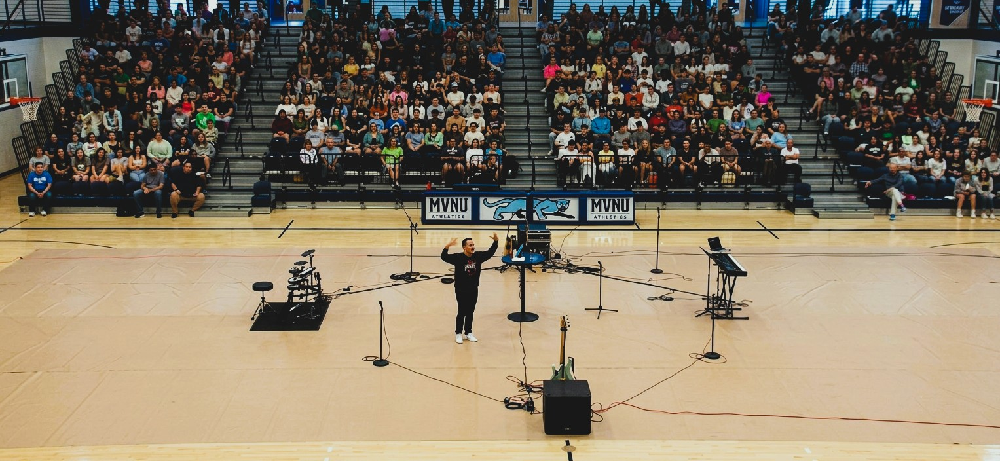

Misión · Estados Unidos
Mission · United States
En los Estados Unidos, Josué Santiago sirve como pastor principal de Family of Faith Community Church — una comunidad de fe activa donde lidera, discipula y equipa a creyentes para vivir una fe transformadora que impacta la cultura y la sociedad que los rodea.
In the United States, Josué Santiago serves as senior pastor of Family of Faith Community Church — an active faith community where he leads, disciples and equips believers to live a transforming faith that impacts the culture and society around them.

Josué viaja regularmente para capacitar a líderes, pastores y profesionales en iglesias, universidades y organizaciones de todo el país en temas de liderazgo, propósito, identidad y transformación comunitaria.
Josué regularly travels to train leaders, pastors and professionals in churches, universities and organizations across the country on leadership, purpose, identity and community transformation.

La próxima generación de líderes está siendo levantada. No solo para el ministerio, sino para transformar cada esfera de la sociedad con los valores del Reino.
The next generation of leaders is being raised up. Not just for ministry, but to transform every sphere of society with Kingdom values.
"Su misión es levantar líderes íntegros, fortalecer comunidades y movilizar personas para vivir una vida de propósito e impacto."
"His mission is to raise wholehearted leaders, strengthen communities, and mobilize people to live lives of purpose and impact."Kingdom in Action
¿Querés invitar a Josué a tu iglesia, universidad u organización?
Want to invite Josué to your church, university or organization?
ContactanosContact UsTu donación apoya misiones, pastores y comunidades.
Your donation supports missions, pastors and communities.